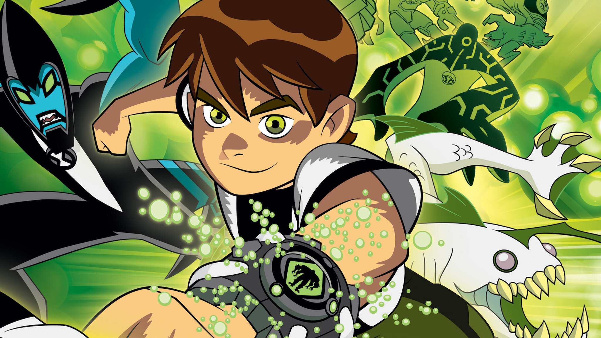

A série original Ben 10, lançada em 2005 pelo estúdio Cartoon Network Studios, marcou o início de uma das franquias de animação mais populares e duradouras da TV. A trama acompanha Ben Tennyson, um garoto de 10 anos comum que, durante uma viagem de férias pelo país com sua prima Gwen e seu avô Max, encontra um misterioso dispositivo alienígena chamado Omnitrix. Esse relógio se prende ao seu pulso e concede a Ben o poder de se transformar em dez diferentes formas alienígenas, cada uma com habilidades únicas — como o Chama, com controle sobre o fogo, e o Quatro-Braços, conhecido por sua força sobre-humana.
Ao longo da jornada, Ben usa o Omnitrix para enfrentar vilões, ajudar pessoas e proteger a Terra de ameaças intergalácticas, enquanto aprende sobre responsabilidade, coragem e trabalho em equipe. Sua prima Gwen contribui com sua inteligência e talento para magia, e o avô Max, um ex-encanador interestelar (membro de uma organização secreta de defesa galáctica), oferece experiência, tecnologia e orientação.
A série mistura aventura, humor e ficção científica, apresentando um universo cada vez mais rico, com alienígenas de diferentes planetas, mistérios sobre a origem do Omnitrix e o surgimento de inimigos icônicos como Vilgax, Kevin 11 e Charmcaster.
Com o passar das temporadas, Ben descobre novas transformações e enfrenta desafios cada vez mais grandes, consolidando seu papel como herói. No total, a série original teve quatro temporadas e 49 episódios, sendo amplamente elogiada por sua criatividade, desenvolvimento de personagens e trilha sonora marcante.
O sucesso foi tão grande que Ben 10 se expandiu em várias continuações e reboots, incluindo Ben 10: Alien Force, Ben 10: Ultimate Alien, Ben 10: Omniverse e o reboot de 2016, além de filmes animados e produtos licenciados. Essa primeira série não apenas apresentou o universo de Ben Tennyson, mas também definiu o estilo e a essência da franquia, tornando-se um marco na animação moderna e um símbolo nostálgico para toda uma geração.